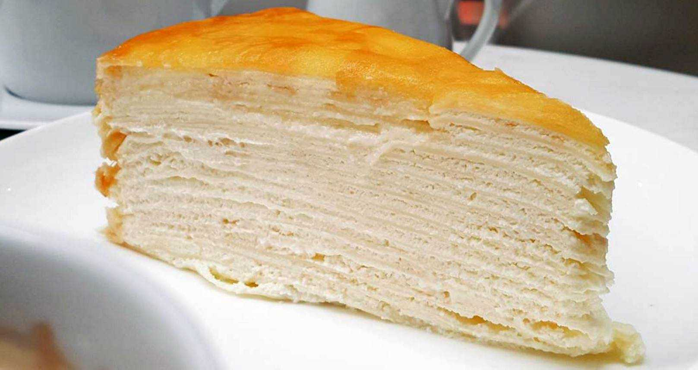

Mille Crepe Cake

Description
A mille crepe cake is a layer cake made of crepes stacked with different fillings. Its name translates to “a thousand crepes”, which describes the recipe's many layers of crepes and filling. Although crepe cakes have long existed in French pastry under the name “gâteau de crêpes”, modern mille crepe cakes were invented by Japanese pastry chef Emy Wada.
For this recipe, we're going to make a vanilla mille crepe cake.
Ingredients
For the crepe:
- ½ cup warm water
- 1 cup milk
- 4 large eggs
- 4 tbsp unsalted butter (melted, plus more to sauté)
- 1 cup all-purpose flour
- 2 tbsp granulated sugar
- A pinch of salt
For the frosting:
- 1 cup unsalted butter (room temperature)
- 12 oz sweetened condensed milk
- 8 oz cream cheese (room temperature)
- 2 tsp vanilla extract
Steps
- In a blender, add the crepe ingredients in the order they are listed and blend until well combined. Scrape down the blender with a spatula if needed.
- Heat a non-stick pan over medium heat. Add a tiny dot of butter and spread it around to lightly coat.
- Once butter is hot, add about 3 tablespoons of batter, or enough to lightly coat the bottom of the pan. Swirl the pan as you add the batter to evenly coat the bottom of the pan.
- Sauté about 30 seconds per side or until lightly golden then flip using a spatula and proceed to do the same with the other side. Flip crepe out onto a clean surface and let layers cool to room temp before stacking.
- In the bowl of a mixer, beat the butter and condensed milk on high speed for 7 minutes. It should look whipped and lightened in color.
- Add 8 oz of softened cream cheese (1 tablespoon at a time while mixing at medium-high speed). Continue to beat for 3 minutes or until it's no longer lumpy.
- Add 2 teaspoons of vanilla and whisk until it's well-incorporated and smooth.
- Place the first crepe layer onto a serving platter and spread about 3 tablespoons of frosting between each crepe layer, totaling 15 layers of crepes and 15 layers of cream.
- Refrigerate the cake for at least 6 hours or until frosting has firmed up (can be made 2 days ahead). This will make it much easier to slice after refrigeration and it won't slide apart.
- Optional: to serve, dust with powdered sugar if desired and top with fresh berries.